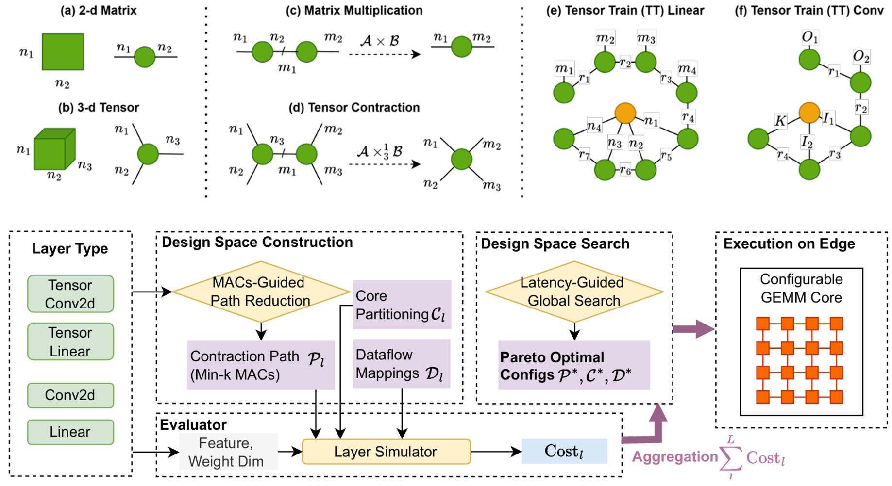
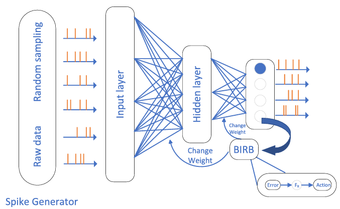
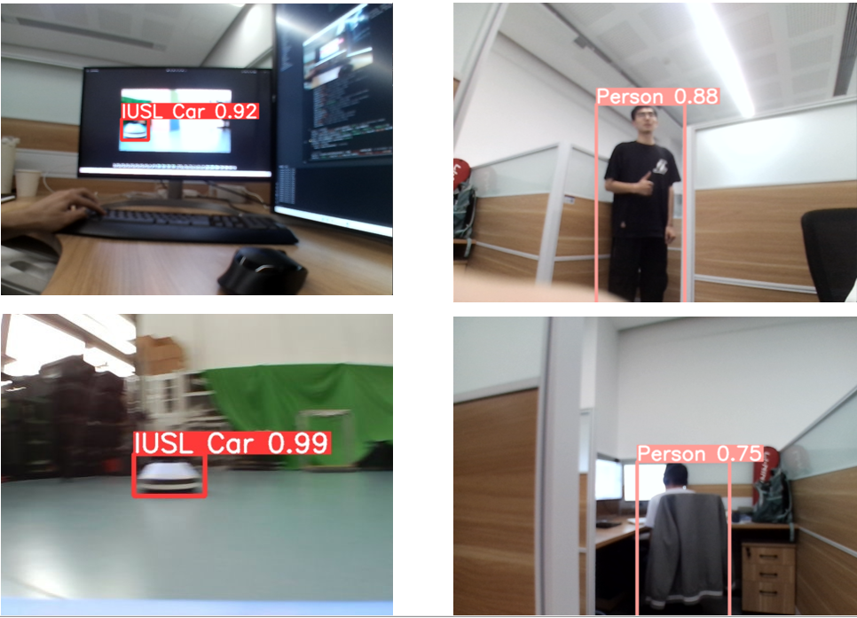
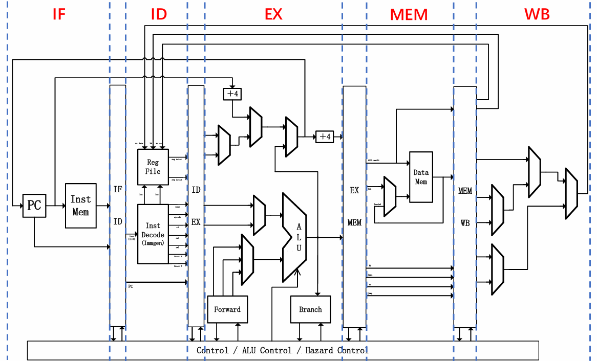
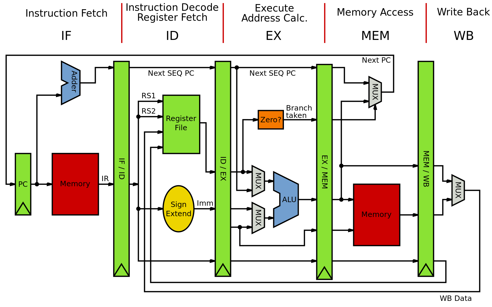

Jinsong Zhang
Email: jinsongzhang [at] ucsb [dot] edu
I received my M.S. degree in Computer Engineering from University of California, Santa Barbara, where I was supervised by Prof. Zheng Zhang. Previously, I earned my B.Eng. in Electrical and Electronic Engineering from the University of Liverpool.
My research is supervised by Prof. Zheng Zhang, focusing on low-precision tensorized neural network training, hardware-algorithm co-design, and domain-specific hardware accelerators. Previously, I worked as a visiting student in the WINDY Lab at Westlake University under Prof. Shiyu Zhao on autonomous robotic systems and edge perception.
Broadly, I am fascinated by exploring novel computer architectures to break through the memory and compute walls—ranging from spatial/systolic architectures to neuromorphic and brain-inspired computing systems.
Publications
Proposed a unified Design Space Exploration (DSE) framework that jointly optimizes tensor contraction paths, hardware PE partitioning, and multi-level dataflow mappings for Tensorized Neural Networks. Deployed and evaluated on a Xilinx Virtex UltraScale+ (VU9P) FPGA, achieving 3.28x–4.00x inference and 3.42x–3.85x training latency speedups over dense baselines.
Education
-
University of California, Santa Barbara Sep 2024 - Dec 2025M.S. in Computer Engineering | GPA: 3.78/4.0
-
University of Liverpool Sep 2022 - Jun 2024B.Eng. in Electrical and Electronic Engineering | GPA: 3.7/4.0
-
Xi'an Jiaotong-Liverpool University Sep 2020 - Jun 2022B.Eng. in Electronic Science and Technology | GPA: 3.3/4.0
Technical Skills
- EDA & Toolchains: Xilinx Vivado, Vitis HLS, Cadence Virtuoso, ModelSim, Quartus.
- Software & Machine Learning: C/C++, Verilog, Python, PyTorch, ROS, Linux, Git, MATLAB.
Research Projects

Graduate Researcher @ UCSB (Jan 2025 – Nov 2025)
Constructed a latency-driven analytical cost model with MAC-guided path pruning to search Pareto-optimal points. Implemented a streaming Tensor Train contraction kernel and reconfigurable systolic GEMM engine in Vitis HLS on Xilinx VU9P, demonstrating up to 4.00x latency speedup with 19.19 GOPS/W energy efficiency across ResNet and ViT.

Graduate Researcher @ UCSB (Jan 2025 – Mar 2025)
Proposed an energy-efficient neuromorphic learning framework combining Reinforcement Learning with Brain-Inspired Reward Broadcasting (BIRB) to counter catastrophic forgetting. Formulated an SNN-Q learning pipeline with temporal-difference updates, achieving 96.88% accuracy on MNIST while cutting training convergence time by 66%.

Visiting Research Assistant @ Westlake University (May 2023 – Sep 2023)
Architected an end-to-end distributed swarm vision framework integrating custom YOLOv5s and ROS. Deployed Triton Inference Server on edge robotic platforms, refactoring image preprocessing and ROS topic communications into C++ to slash edge inference latency and maximize control loop throughput.
Selected Projects

UC Santa Barbara (Sep 2024 – Dec 2024)
Architected an RV32I 5-stage pipelined core in Verilog featuring dynamic hazard detection, stall management, and forwarding paths. Designed the entire transistor-level datapath in Cadence Virtuoso using NCSU FreePDK 45nm, achieving timing closure at 50 MHz and verifying cycle-exact behavioral equivalence with RTL via SPICE simulations.

University of Liverpool (Jan 2024 – Mar 2024)
Implemented a multicycle MIPS microprocessor on FPGA with custom instruction extensions in Verilog, optimizing datapath execution cycles.
Westlake University (May 2023 – Jul 2023)
Engineered an airborne terrain-monitoring payload combining multi-beam laser rangefinders and an IMU with microcontroller telemetry. Implemented moving-average filtering to suppress motor vibration noise, providing robust slope angle feedback for autonomous terrain-adaptive landing.